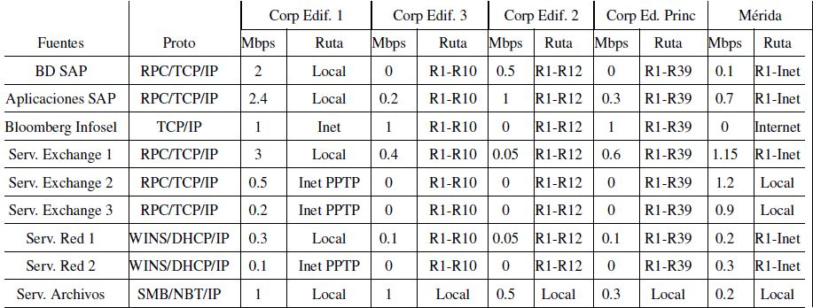

Capítulo 3 Caracterización de la red y del tráfico generado por las aplicaciones
Con mucha frecuencia un proyecto de diseño de redes está orientado a la evolución o crecimiento de una infraestructura ya existente, y rara vez hacia la creación de una red completamente nueva. Por esta razón, es muy importante iniciar el proyecto con un estudio detallado de las características de la red existente y del tráfico que circula por ella.
Este estudio permitirá identificar si los objetivos de diseño son realistas, se pueden detectar cuellos de botella existentes o potenciales y se podrá garantizar la interoperabilidad del diseño con la infraestructura actual. Además, dará una referencia de base (baseline) contra la cual sea posible evaluar el desempeño del sistema una vez implementado.
A pesar de estas ventajas, la caracterización de la red suele hacerse de manera incompleta o superficial argumentando falta de tiempo o suponiendo que la red es bien conocida. A menos de que la organización que administra la red haya hecho una muy buena labor de caracterización, definición de procedimientos y sea sumamente disciplinada en la documentación de los diversos tipos de cambios que se pueden realizar en dispositivos, topología, servicios, etc., la realidad es que un buen análisis en la fase de planeación del modelo de proceso es indispensable.
Habiendo dicho esto, se habrá de reconocer que la necesidad de terminar lo antes posible con el proyecto puede ser la consecuencia de necesidades de negocio reales y justificadas. Un buen administrador del proyecto debe poder negociar un balance de prioridades y empujar la implementación de algunos servicios, localidades o dispositivos para versiones futuras de la red, y definir la forma de trabajo más eficiente posible para acortar tiempos sin perder calidad. Sea cual sea el camino, en la gran mayoría de los proyectos en donde estos pasos se omiten o se recortan demasiado, el resultado es que el tiempo ganado con las omisiones, se perderá con creces en las fases finales del proyecto.
La caracterización de la red implica identificar claramente su topología, los repositorios y consumidores de información, los volúmenes de tráfico que son intercambiados y la estructura protocolaria para lograrlo.
3.1 Caracterización de la topología
La caracterización de la topología empieza por la obtención de un mapa de la red que describa su configuración física y lógica, pero abarca mucho más que eso: se deben obtener y documentar las políticas de asignación de nombres y direcciones y el esquema de direccionamiento actualmente utilizado. También se habrá de observar el tipo y estado que guardan los esquemas de cableado y si existen restricciones (ambientales, arquitectónicas, legales) para instalar alguna infraestructura de capa física.
Mucha de esta información fue recabada en la fase de visión y alcance. Durante la fase de planeación, se recaba la información adicional necesaria para completar la caracterización de la red.
La información recabada debe ser examinada y validada tratando de asegurar que no se han hecho cambios importantes no documentados. Partir de suposiciones erróneas es un grave riesgo que puede comprometer seriamente el éxito del proyecto.
3.1.1 Mapa de la red
El mapa de la red comienza por un conjunto de esquemas de interconexión con diferentes niveles de abstracción en donde se presenta la organización topológica de la red. Existen diversas herramientas que permiten automatizar la construcción y/o validación de estos esquemas.
Al integrar el mapa de la red, se debe crear un documento lo más completo posible en el que se especifique, cuando corresponda:
la ubicación física de las instalaciones: ciudad, edificio, piso y, en algunos casos, hasta cubículo donde se encuentren los equipos principales (nodos de conmutación, servidores, etc.);
el personal responsable de los diferentes elementos de la red;
los enlaces WAN entre ciudades especificando tecnología, capacidad y restricciones;
los enlaces CAN y LAN entre edificios especificando igualmente la tecnología utilizada, sus capacidades y restricciones.
los puntos de acceso al proveedor de acceso a Internet y los servicios contratados;
los servidores de acceso remoto y de VPNs, y las políticas de acceso;
las políticas y procedimientos de seguridad;
las políticas y procedimientos de administración;
la estructura lógica de la red.
Caso de estudio: Topología física y topología lógica
En una empresa de servicios con cobertura nacional, el servicio de correo enfrentaba serios problemas de rendimiento, pero extrañamente, parecían afectar solamente la comunicación entre algunas ciudades. Por ejemplo, la ciudad \(F\) en la figura 3.1 podía tener problemas de comunicación con la ciudades \(G\), \(I\) y \(J\), pero no con las demás. Algunas ciudades no tenían problema alguno.
Al estudiar las condiciones de la organización, se encontraron dos elementos interesantes. En primer término, el departamento responsable de administrar el servicio de correo electrónico no era el mismo que se hacía cargo de la administración de los enlaces de comunicación entre las diferentes ciudades, tampoco reportaban al mismo jefe, y en realidad tenían poca comunicación entre sí. En segundo lugar, la topología de la red de correo electrónico (topología lógica) era una estrella simbolizada por las líneas rectas de la figura 3.1: todos los servidores de correo electrónico avanzaban el correo para otras ciudades a las oficinas centrales en la ciudad \(A\), y un servidor central ahí lo redistribuía hacia las ciudades destino.
Figura 3.1: Topología física y lógica de un servidor de correo
Por su parte, los enlaces (topología física), representados por las líneas quebradas en la figura, mostraban la topología de estrellas interconectadas a través del triangulo \(A\), \(E\), \(H\). Al enviar un mensaje de correo electrónico de la ciudad \(F\) a la ciudad \(G\), el servicio de correo electrónico asumía una topología con una única estrella y lo enviaba a la ciudad \(A\), para que de ahí el mensaje fuera enviado a la ciudad \(G\).
Dada la topología física de los enlaces, el mensaje salía de \(F\) hacia \(E\), de ahí viajaba a \(A\), hasta llegar al servidor distribuidor de correo electrónico, quien entonces lo enviaba de vuelta sobre el mismo enlace entre \(A\) y \(E\), y de ahí viajaba hasta \(G\). El mensaje recorría entonces cuatro segmentos de red, cuando idealmente solo necesitaba recorrer dos, y los dos viajes de sobra se daban sobre un mismo segmento de red.
Una vez identificado el problema, se reconfiguraron los servidores de correo locales para ofrecer un servicio distribuido coherente con la arquitectura de la red
3.1.2 Asignación de nombres y direcciones
Conocer el esquema de asignación de nombres nos permitirá acotar la solución de diseño de red. El esquema de direccionamiento puede afectar el diseño propuesto para satisfacer los requerimientos técnicos. Por ejemplo, puede ser necesario el uso de traductores de direcciones (NAT, Network Adress Translation) o el renunciar a sumarización de rutas si los protocolos actualmente utilizados no soportan este esquema10.
Durante la caracterización de la red es necesario distinguir cuáles son las prácticas comunes para asignar nombres a dispositivos y servicios. También deberá quedar clara la estrategia de asignación de direcciones. Por ejemplo, deberá tenerse una respuesta clara a las siguientes preguntas:
¿Se sigue o promueve un modelo de direccionamiento jerárquico? ¿Se utiliza o puede utilizarse la sumarización de direcciones?
¿Se utiliza o puede utilizarse una estrategia de asignación dinámica de direcciones?
¿Se cuenta con un rango de direcciones libre suficiente para los objetivos de diseño? ¿Se debe negociar un bloque de direcciones?
¿Se utiliza o puede proponerse un esquema de direccionamiento privado?
3.1.3 Caracterización de los medios de transmisión
Es imprescindible realizar este estudio para poder satisfacer los requerimientos de escalabilidad y disponibilidad. Al recabar información referente a los medios de transmisión, es decir, a la capa física del modelo de OSI, se deben identificar las tecnologías utilizadas tanto en la red local como en las interconexiones MAN y WAN. También se debe identificar la ubicación y estado de los puntos de conexión: paneles de parcheo, clóset de alambrado, puntos de cruce de cableado vertical y horizontal, etcétera. Para una red CAN, Campus Area Network), debe señalarse claramente cuál es la tecnología de interconexión entre edificios y cuál es la distancia que los separa.
La experiencia indica que se es más informal al desplegar una red local, por lo que es ahí donde se sugiere que se ponga mayor énfasis en la caracterización. Al detectar el tipo de cableado y/o de red inalámbrica que se utiliza, se pueden identificar problemas potenciales al diseño propuesto.
En lo que concierne al cableado de la red, se deberá detectar si se siguen correctamente las normas de cableado estructurado; si la categoría de cables, rosetas, conectores, etc. es compatible con la velocidad de transmisión deseada; si se respetan las distancias máximas, los códigos de color para los conectores; etc.
Se deberá verificar cuántos pares de cable están siendo utilizados y en qué estado se encuentran. Por supuesto, también deberá documentarse la cantidad de pares disponibles y en qué áreas se encuentran. Además, se debe verificar que la ductería tiene espacio suficiente para introducir más cable de ser necesario.
Un ducto de par trenzado nunca debe estar ocupado a más del 50% de su capacidad.
Si se utilizan redes inalámbricas, se debe verificar que las tarjetas de red y los puntos de acceso están homologados a las normas mexicanas. Así mismo, es necesario verificar que los puntos de acceso están configurados correctamente, que no interfieren entre sí y que el radio de cobertura satisface los nuevos requerimientos.
3.1.4 Restricciones ambientales y arquitectónicas
Durante el recorrido de las instalaciones se debe prestar mucha atención
al entorno en el que éstas se ubican con el fin de identificar riesgos
que pudieran comprometer seriamente la viabilidad del proyecto en etapas
posteriores. Por ejemplo, si el edificio se encuentra en una zona con
riesgos de inundaciones (alta precipitación pluvial, cercano a un río o
laguna), se debe buscar que los nodos de interconexión (y en general, el
centro de cómputo) se ubiquen al menos en el primer piso. De hecho, esta
es una práctica recomendada para la seguridad física de las
instalaciones de TI.
Si la instalación se encuentra en una zona de vibraciones anormalmente altas (por las características de la empresa, por encontrarse muy cerca de una vía de ferrocarril, etcétera.), el tipo de conector a utilizar debe ser más robusto. Así mismo, se deben prever revisiones frecuentes de las condiciones del cableado.
Es posible que el edificio sea rentado o que sea de interés histórico y esté protegido por leyes especiales. En estos casos, será importante garantizar que se cuenta con los permisos necesarios para instalar la infraestructura de red necesaria (perforaciones para instalar cableado en red local, obra civil para instalar antenas, etcétera.)
Para interconectar dos edificios, aún si están relativamente cercanos, se debe contar con permiso de vía. Si se piensa utilizar algún medio inalámbrico (los enlaces láser suelen ser una excelente opción) se debe verificar que se cuenta con línea de vista y que no hay razones para suponer que ésta va a perderse en el mediano plazo.
También es conveniente identificar y registrar que se cuenta con las condiciones adecuadas de ventilación, control de temperatura, suministro de energía eléctrica regulada y fuentes de poder no interrumpible (UPS).
Se debe prestar una atención particular a ambientes extremos. Por ejemplo, en ciudades con muy altos niveles de humedad y temperatura, equipos convencionales de interconexión pueden no funcionar correctamente si no se cuenta con una instalación ambiental apropiada. De forma similar, en naves industriales con maquinaria eléctrica pesada, las inducciones electromagnéticas pueden afectar severamente las transmisiones en cables no blindados.
Caso de estudio: Equipo de aire acondicionado
En una empresa financiera, se decidió instalar equipos de aire acondicionado. Para no alterar la arquitectura del edificio, se determinó colocar los equipos en los clósets de cableado, encima de los concentradores y enrutadores de la red. Una tarde de invierno, algún empleado consideró conveniente apagar los equipos de aire acondicionado pues la temperatura no justificaba su utilización. Al condensarse el líquido de estos equipos, éste cayó hacia los equipos de interconexión, los cuales, naturalmente, dejaron de funcionar.
3.2 Desempeño de la red actual
Evaluar el desempeño de la red actual es fundamental para establecer una referencia a partir de la cual se puedan comparar las prestaciones del nuevo diseño. Esta evaluación también permite identificar potenciales cuellos de botella y puntos críticos donde habrá que prestar atención especial al diseño.
La evaluación del desempeño de una red puede realizarse a través de modelos analíticos, de simulación y mediante mediciones directas. En esta sección se plantea brevemente esta última opción y las técnicas de modelado se presentarán en el capítulo 7.
Para colectar información sobre el estado de la red y sus equipos, se medirán variables y parámetros de desempeño de la red, lo cual suele ser un proceso largo y complejo. Hay que decidir lo más pronto posible cuáles son las variables a estudiar, el tipo de herramienta a utilizar, la duración del experimento y sobre qué puntos de la red llevarla a cabo. Para todos estos elementos no hay una respuesta única, pues dependen completamente de los objetivos del estudio.
En cuanto a los puntos de evaluación, los primeros candidatos son los segmentos en la red dorsal y aquellos por donde corren los flujos de misión crítica, así como los segmentos que interactuarán con el nuevo diseño.
3.2.1 Herramientas de recolección
Existen diversas herramientas que nos permiten obtener distintos parámetros de desempeño, y con distintos niveles de detalle.
Es muy importante conocer la utilidad y las características (sus capacidades y nichos de aplicación) de las herramientas a nuestra disposición pues el éxito del estudio dependerá de la selección de la herramienta apropiada.
Entre las herramientas típicas para realizar estudios de evaluación de desempeño se encuentran los monitores y analizadores de protocolos, los agentes y protocolos de administración (estudiados en el capítulo 4), las bitácoras y guiones de administración en sistemas operativos y las sondas especializadas tanto activas (que introducen un flujo de evaluación en la red) como pasivas.
Hoy en día es posible encontrar herramientas de monitoreo muy sofisticadas, que incorporan agentes inteligentes para apoyar al administrador de la red a detectar posibles problemas en la red y proponerle alternativas de solución. Dicho esto, sigue siendo de primordial importancia el saber interpretar adecuadamente la información que estas herramientas ofrecen. Por ejemplo, al analizar una gráfica de porcentaje de utilización como la que se muestra en la figura 3.2, es importante considerar que los analizadores de protocolos muestran la carga transportada en algún segmento de la red, la cual puede ser distinta a la carga ofrecida a la red.
Figura 3.2: Una vista típica de un analizador de protocolos en el que se observa la utilización del segmento, posibles indicadores de congestión, y la distribución algunas de las características de los protocolos observados
También se debe tener alguna idea de lo que se está buscando o de lo que se espera observar en el estudio. Por ejemplo, la figura 3.3 muestra otra pantalla del analizador en el que se reporta cómo se distribuye la capacidad del segmento utilizada entre los distintos protocolos detectados, junto con otras estadísticas de utilización (cantidad de bytes y de tramas medidos, número de tramas en difusión, errores detectados, etcétera.). Más adelante en este capítulo se presentan algunas cifras de lo que se considera una red “saludable”.
Figura 3.3: Otra vista del analizador de protocolos que permite conocer la distribución de cómo se está utilizando la red
Este tipo de gráfica permite detectar si hay protocolos que no deberían en principio transitar en la red, si existen protocolos que envían demasiadas tramas de difusión, cuáles son las aplicaciones/protocolos más utilizados, etcétera.
Los monitores y analizadores de protocolos se instalan en el segmento de red de interés y recaban información de los flujos observados. Esto significa que para tener una idea global de la red, habría que colocar un analizador en cada uno de los segmentos de interés y correr el monitoreo durante el tiempo “suficiente”. En ciertos casos es necesario hacer el estudio de esta manera, pero la mayoría de las veces, es suficiente incorporar agentes de monitoreo en los mismos dispositivos de red (las sondas RMON) que se incorporan al sistema de administración de red, como se verá en el capítulo 4.
3.2.2 Periodo y frecuencia de recolección
En un estudio de evaluación de desempeño, frecuentemente los parámetros de interés son promedios evaluados en una ventana de tiempo. La selección del intervalo, su duración y la frecuencia de captura de los valores son fundamentales para poder tener una interpretación adecuada los resultados obtenidos.
Consideremos, por ejemplo, que se desea evaluar la red en condiciones de carga normal, pero el muestreo se hace durante un período atípico (a la hora de entrada, muchos empleados encienden su computadora y se generan muchos mensajes de difusión DHCP; en fin de mes o al cierre del ciclo, cuando hay picos de operación; etcétera.). Entonces, se tendrá una imagen distorsionada del tráfico y se tenderá a sobredimensionar la red.
En otras ocasiones, son precisamente los picos de tráfico los eventos de interés y es donde se deberán realizar mediciones especialmente detalladas. Dependiendo del giro de la empresa, se deberá tener una idea de la forma en que la utilización variará. Por ejemplo, es común que el tráfico en la red se incrementa al llegar el fin de mes o el cierre del año o del periodo fiscal. El incremento de tráfico en estos periodos puede ser considerable y es muy importante que la red esté en condiciones de proporcionar un servicio apropiado en estos periodos críticos.
Para poder diseñar e interpretar correctamente este tipo de estudios, también es importante conocer las características de operación dentro de la organización. Por ejemplo, se detectarán picos hacia el servidor de correo si en las mañanas los empleados entran más o menos a la misma hora y suelen revisar y responder a sus mensajes. En ciertas organizaciones se detectan picos similares inmediatamente antes del almuerzo y del fin de la jornada pues la política organizacional es tratar de evitar dejar asuntos. Algunas empresas hacen un uso intensivo de su red WAN en horas no hábiles para consolidar bases de datos y distribuir respaldos. En esos casos, es necesario determinar si deben realizarse mediciones detalladas durante este periodo.
Con esta información y habiendo identificado claramente el objetivo del estudio, se procede a diseñar el mecanismo de recolección. El periodo deberá ser suficientemente largo para ser significativo; idealmente, deberá cubrir un ciclo completo de operación del comportamiento a evaluar.
La evaluación deberá realizarse sobre una población (nodos, enlaces, aplicaciones) representativa. La selección de los segmentos debe comenzar obviamente por aquellos en los que se ubican servidores importantes y los segmentos en donde hay grupos grandes de usuarios, tanto como los segmentos por donde habrá de fluir el tráfico en el camino de un sitio al otro.
La frecuencia de recolección, es decir, la intensidad con la que se evalúan las métricas de interés, establece un compromiso entre el nivel de detalle deseado y la cantidad de información a almacenar y procesar. La decisión adecuada se tomará en función del objetivo del estudio:
Muestreando en el orden de segundos, se pueden detectar problemas a nivel protocolos de comunicación: retransmisiones por temporizadores mal configurados, tormentas de difusión, enrutadores que publican rutas demasiado frecuentemente, etcétera.
Para poder llevar a cabo un análisis de desempeño y obtener una referencia de base sobre el comportamiento general de la red, suelen realizarse mediciones con intervalos de uno a cinco minutos.
Para identificar patrones globales de utilización, períodos de picos de operación y gráficas de tendencias, muestreos del orden de 5 a diez minutos suelen ser utilizados.
3.2.3 Algunas métricas de desempeño
Dependiendo del tipo de red (LAN, WAN) y de la tecnología utilizada, existen distintos parámetros para evaluar la tasa de error observada –y para saber si ésta es aceptable. En todos los casos, es deseable correlacionar la tasa observada contra las métricas de carga y utilización para detectar cuellos de botella o equipo defectuoso en la red.
Considerando que ethernet es la tecnología dominante en redes locales, a continuación se presentan algunas de las métricas comunes de error y sus valores recomendables.
- Número de tramas con CRC incorrecto.
-
La recomendación es que no debe haber más de una trama por cada megabyte de información. Se evita definir esta métrica como un porcentaje del número de tramas para evitar la dependencia con el tamaño de las tramas.
- Número de colisiones.
-
En una red que trabaja correctamente, las colisiones detectadas no deberán exceder el 0.1% de los paquetes emitidos. A primera instancia esto puede parecer extraño dado que las colisiones son el mecanismo natural del control de acceso en ethernet. Sin embargo, la mayoría de las colisiones se detectan durante el preámbulo y no son tomadas en cuenta como tramas en colisión.
- Porcentaje de paquetes perdidos.
-
En una red bien dimensionada, el porcentaje de paquetes perdidos debe ser inferior al 1%.
Los dispositivos de red y los equipos terminales pueden introducir retardos adicionales o comportamientos que pueden afectar el desempeño y deben ser tomados en esta fase. Por desgracia, son muchos los factores a considerar y se requiere de mucha experiencia para poder identificarlos. A continuación se mencionan algunos de ellos.
En TCP/IP, los valores por omisión para los buffers de transmisión y recepción pueden no ser adecuados para la aplicación específica. Por ejemplo, si el espacio reservado para el buffer de recepción es pequeño, el protocolo anunciará una ventana de recepción muy pequeña, que limitará el desempeño de la red.
La configuración y la granularidad de los temporizadores también pueden afectar el desempeño: temporizadores mal configurados y que no se adapten dinámicamente a las condiciones de la red pueden ocasionar retransmisiones de información innecesarias. La granularidad de los temporizadores en muchas implementaciones de TCP/IP es de \(500\,ms\), un valor que puede resultar demasiado grande para reaccionar a condiciones de congestión en ciertas implementaciones.
La implementación de las pilas de protocolos en muchos sistemas operativos populares realizan copias de información mientras ésta es transferida de una capa a otra. Estas copias de memoria a memoria pueden degradar el desempeño de los equipos involucrados.
El mecanismo de atención a interrupciones de entrada-salida puede ser muy ineficiente. Al enviar o recibir tramas por las interfaces de red, los cambios de contexto en los sistemas operativos también pueden introducir retrasos considerables, degradando así el desempeño de las aplicaciones.
Debe considerarse que existen varios sistemas complementarios a las aplicaciones de red y que también deben ser tomados en cuenta. Por ejemplo, deberá evaluarse el tiempo de respuesta de los servidores de nombres (DNS) y –aunque su efecto es menor– de los servidores de configuración.
Finalmente, se debe evaluar el desempeño de los nodos de conmutación para identificar si ellos representan un posible cuello de botella. En particular, se debe medir la tasa de ocupación media en los buffers de salida, la cual debe ser muy baja, y el porcentaje de utilización del CPU. De acuerdo a recomendaciones de Cisco, este porcentaje debe ser menor al 75% en intervalos de muestreo de 5 min.
Al evaluar los nodos de conmutación, se debe verificar que cuentan con los elementos necesarios para satisfacer los requerimientos de diseño. Por ejemplo, es importante identificar la cantidad de memoria disponible, la versión de sistema operativo y los protocolos de enrutamiento soportados. Podría también ser necesario detectar si el equipo cuenta con los elementos necesarios para dar soporte a los requerimientos de calidad de servicio identificados.
Ejemplo 3.1 Si bien es cierto que prácticamente todos los enrutadores actuales soportan el protocolo IPv6, la dominante mayoría lo hace por software en la actualidad. El throughput sería muy inferior al conmutar paquetes IPv6 comparado con el obtenido para paquetes IPv4, que pueden ser conmutados por hardware en muchos equipos.
Similarmente, una empresa que desea migrar su red de IPv4 a IPv6 (o permitir la coexistencia de los dos protocolos), debe asegurarse que sus equipos cuentan con la capacidad necesaria para aumentar tanto la memoria RAM, donde se almacenan las tablas de enrutamiento (con direcciones mucho mayores), como del firmware, donde se implementan muchas de las funcionalidades inherentes al nuevo protocolo.
3.2.4 Presentación de resultados
La información recolectada durante un cierto intervalo de tiempo debe ser presentada de manera tal que permita sacar conclusiones útiles. Los datos obtenidos pueden ser presentados en un listado, por medio de una gráfica, o bien mediante un resumen estadístico de los mismos. La representación adecuada depende, una vez más, de los objetivos de la prueba.
Gráficas de tendencia
Una gráfica de tendencia representa la variable de interés contra el tiempo. Es una manera muy cómoda de visualizar su comportamiento y permite identificar rápidamente si la variable presenta comportamientos cíclicos, cuándo hay picos, de qué orden son y cuánto duran, etcétera.
Al capturar la información necesaria para producir las gráficas de tendencia, es posible entender con mayor claridad el compromiso entre el período y la frecuencia de recolección en función de los objetivos de estudio, discutidos en los párrafos anteriores. Por ejemplo, las gráficas de las figuras 3.4 y 3.5, muestran la tasa de salida de un enrutador (en bytes por segundo) en un periodo de un día y de una semana. En la primera gráfica se desea tener un mayor nivel de detalle, por lo que la frecuencia de captura debe ser mayor. La gráfica de tendencia semanal (figura 3.5) únicamente se utiliza para tener una idea del comportamiento global de la variable por día. Se puede observar claramente un comportamiento cíclico relacionado con la actividad durante las horas hábiles. El hueco largo sin actividad al centro de la gráfica corresponde a un fin de semana con un día festivo.
Figura 3.4: Tasa obtenida (en bytes/s) en la interfaz de salida de un enrutador comercial durante un día
Figura 3.5: Tasa obtenida (en bytes/s) en la interfaz de salida de un enrutador comercial durante una semana
3.2.5 Análisis estadístico de redes
En general, es imposible determinar con exactitud el valor que tomarán las métricas de desempeño de interés, por lo que se les suele considerar como variables aleatorias (V.A.) a las que se debe aplicar algún análisis estadístico para poder interpretar correctamente los resultados obtenidos.
Al considerar las métricas de interés como V.A., se debe obtener un número grande de muestras antes de poder sacar conclusiones sobre ellas. Al agrupar las muestras obtenidas en un histograma que represente la frecuencia de ocurrencia de los valores obtenidos, éste se aproxima a la función de densidad de probabilidad (pdf, probability density function**).
La pdf de una variable aleatoria indica qué tan probable es la obtención de cada uno de sus valores y contiene todas sus propiedades estadísticas.
Figura 3.6: Histograma que representa la función de densidad de probabilidad de una variable aleatoria discreta
En la figura 3.6 se observa una curva con un solo pico o moda. Se trata de una pdf monomodal. Es bastante común que en redes de comunicaciones se encuentren V.A. con varios picos. Por ejemplo, al graficar el tamaño de las tramas en una red local, típicamente se encontrarán dos picos muy notorios en los valores de 64 y 1,500 bytes. Esto se debe principalmente al hecho de que dicho tráfico se compone por lo general de tramas de control (acuses de recibo, solicitud de conexión, etcétera.) y tramas de aplicaciones que intercambian grandes volúmenes de información.
Sumarización estadística
Si bien la pdf contiene toda la información estadística de la V.A. de interés, puede resultar muy poco práctica para tomar decisiones, sobre todo cuando se desean hacer comparaciones entre varias V.A. Por ejemplo, al evaluar varias opciones de diseño de acuerdo a su incidencia sobre las métricas como retardo, carga y utilización, será difícil hacer una comparación objetiva al contar únicamente con los histogramas obtenidos para cada caso. Es por estas razones, entre otras, que se busca sumarizar el comportamiento de una V.A. en una serie de valores puntuales conocidos como indicadores. Entre los indicadores más utilizados se encuentran los indicadores de tendencia media y los de dispersión.
Indicadores de tendencia media
Los indicadores de tendencia media son la media aritmética o promedio, que se obtiene al sumar todos los valores obtenidos entre el número de muestras; la moda, que es el valor más observado, es decir, el obtenido un mayor número de veces; y la mediana, que es el valor justo al 50% del área bajo la curva de la pdf de la V.A.
Ejemplo 3.2 Para cierta V.A. se han obtenido las siguientes muestras:
\(1,~~3,~~ 3,~~ 3,~~ 4,~~ 8,~~ 12,~~ 15,~~ 30\)
\(N=9\qquad \Sigma \text{valores} = 79\)
\(Media = \frac{79}{9} = 8.\bar{7}\qquad Mediana = \text{valor}[5] = 4\qquad Moda = 3\)
El promedio es el indicador más popular para sumarizar una V.A., pero muchas veces no es el adecuado. Como se observa en la figura 3.7, en una distribución simétrica, el promedio, mediana y moda caen en el mismo lugar, pero en una distribución asimétrica no necesariamente. En el caso de redes de comunicaciones las distribuciones son típicamente asimétricas.
Figura 3.7: Indicadores de tendencia media en distribuciones monomodales simétricas y asimétricas
Si los datos son discretos y pueden ser clasificados, es probable que la moda sea el indicador apropiado. Por ejemplo, considere un enrutador con tres interfaces de salida del que se desea conocer cuál es la interfaz más utilizada. En este caso, el promedio no tiene ningún interés.
Por regla general, el promedio es relevante cuando el valor total de la métrica puede ser de interés, aunque si la pdf está sesgada, la mediana puede ser más representativa pues con frecuencia lo que nos interesa es el indicador de tendencia central.
Ejemplo 3.3 Para cierto servidor de base de datos, se han obtenido los siguientes tiempos de respuesta (valores en milisegundos):
\[20,~~20,~~20,~~30,~~40,~~50,~~60,~~60,~~70,~~80,~~940,~~950.\]
La media es de \(195\,ms\) y la mediana de \(55\,ms\). Claramente la mediana es más representativa de la realidad, pues la distribución está muy sesgada por las dos transacciones "largas". De hecho, el 83% de las mediciones está por debajo del promedio.
Entre los errores más comunes que se cometen al resumir una variable aleatoria a un indicador de tendencia media, está el emplear los promedios sin tener en cuenta su dispersión. Por ejemplo, muy pocas veces es significativo el calcular el promedio de valores notablemente diferentes.
Otro error que se debe evitar al trabajar con promedios es el llamado juego de radios, que se genera al comparar valores divididos con bases distintas, como se muestra en el ejemplo siguiente. Desgraciadamente, esta técnica se encuentra con cierta frecuencia en estudios comparativos y benchmarks de productos comerciales.
Ejemplo 3.4 Para tratar de comparar el desempeño de dos tipos de enrutadores, \(A\) y \(B\), se evalúa el tiempo total de conmutación de cada uno sometido a dos condiciones de carga distintas, \(L_1\) y \(L_2\), obteniendo los resultados siguientes:
| Equipo | \(L_1\) | \(L_2\) | Promedio |
|---|---|---|---|
| \(A\) | \(10\,s\) | \(20\,s\) | \(15\,s\) |
| \(B\) | \(20\,s\) | \(10\,s\) | \(15\,s\) |
Suponiendo que en condiciones de operación la proporción de \(L_1\) es similar a la de \(L_2\), con los promedios obtenidos no hay motivos para preferir un enrutador sobre el otro. Considere ahora qué sucede si se desea "normalizar" los resultados en relación con el sistema B. La normalización es una práctica común para eliminar las unidades y para restarle importancia al valor absoluto de las variables de estudio.
| Equipo | \(L_1\) | \(L_2\) | Promedio |
|---|---|---|---|
| \(A\) | \(10/20= 0.5\,s\) | \(20/10=2\,s\) | \(1.25\,s\) |
| \(B\) | \(20/20=1\,s\) | \(10/10=1\,s\) | \(1\,s\) |
¡Ahora parecería ser que el enrutador \(A\) es 25% más lento que \(B\)! Por supuesto, de haber normalizado con respecto al enrutador A, los resultados serían exactamente los contrarios.
Indicadores de dispersión
Los indicadores de tendencia media por sí solos pueden dar una información muy limitada sobre el comportamiento de la variable de estudio. Estos indicadores deben estar siempre acompañados de alguno que permita tener una idea sobre la variabilidad que existe entre los valores que puede tomar la variable. Estos son los indicadores de dispersión.
Para una distribución unimodal y simétrica, el indicador de dispersión más común es la varianza o su raíz cuadrada, la desviación estándar. También se suele utilizar el coeficiente de varianza, que es la razón entre el promedio y la desviación estándar.
Si la distribución no es simétrica no debería utilizarse la varianza. En caso de que ésta esté acotada, se puede especificar el rango, es decir, los valores máximo y mínimo que la variable puede tomar. En otro caso, se deben utilizar los percentiles.
Un percentil es el punto en el que el área bajo la curva de la función de distribución acumulativa alcanza un cierto porcentaje. Por ejemplo, el percentil 5% indica que el 5% de todos los valores obtenidos para la distribución son iguales o menores a ese punto. Este valor podría ser equivalente en algunos casos al valor mínimo en una distribución acotada.
Los percentiles son de mucha utilidad y comúnmente utilizados pues eliminan los valores que son atípicos (outliers) y que podrían sesgar indebidamente la distribución. Por ejemplo, si se desea conocer qué interfaces de un enrutador mantienen una utilización alta sostenida es recomendable utilizar percentiles 90% o 95%: es casi seguro que todas las interfaces tuvieron una utilización de 100% en algún intervalo en que se emitió una ráfaga de datos.
3.3 Caracterización del flujo
Durante la caracterización de la red también es importante obtener un "mapa" de los "ríos" de información que fluyen por la organización y sus características generales. Esta información es de gran utilidad para determinar qué tan adecuada es la infraestructura de red actual y qué modificaciones podrían hacerse para mejorarla.
La caracterización de los flujos implica identificar los repositorios de información, los principales usuarios de dicha información, la simetría y características de los intercambios, los volúmenes de información intercambiados y las trayectorias recorridas.
Como se mencionó en la sección 2.1, se debe tener presente que el modelo en el que los usuarios en una organización utilizaban mayoritariamente recursos disponibles y administrados localmente en su área o departamento ha ido desapareciendo gradualmente.
Los repositorios de información (data stores) pueden ser servidores, granjas de servidores, mainframes, cintas, lectores de CD, redes de almacenamiento (NAS, SAN), etcétera. Por su parte, los consumidores de información pueden ser redes, subredes o sistemas autónomos.
3.3.1 Tipos de flujo por aplicación
Para poder satisfacer los requerimientos de diseño, es importante identificar las características de los flujos generados por las aplicaciones. Se puede empezar por clasificar la simetría, direccionalidad y requerimientos de calidad de servicio de los flujos y posteriormente se tratará de evaluar el volumen del tráfico intercambiado. Como punto de partida, algunos flujos típicos en redes de cómputo tienen las siguientes características:
Terminal virtual - servidor. Asimétrico y bidireccional (ejemplo: telnet)
Cliente - servidor. Asimétrico y bidireccional (ejemplo: sesiones HTTP)
Entre pares. Simétrico y bidireccional (ejemplo: NIS-II, videoconferencia)
Servidor - servidor. Bidireccional y generalmente simétrico (ejemplo: cluster de servidores, respaldo de información)
Cómputo distribuido. Las características dependen de la aplicación particular (ejemplo: grid computing)
Difusión multimedia. Tráfico unidireccional (ejemplo: podcasts)
La simetría de los flujos debe considerarse en varias dimensiones como por ejemplo, en el volumen de tráfico intercambiado, en la velocidad de los enlaces en cada dirección, y en los requerimientos de QoS.
Algunas tecnologías como ADSL aprovechan las características asimétricas de los flujos cliente-servidor. Sin embargo, se debe tener muy presente que las características de estos flujos pueden variar drásticamente con el diseño de la red. Por ejemplo, los nodos de almacenamiento local de páginas web (cache engines) modifican por completo las caracterísicas de los flujos entre el cliente y el servidor (original).
Caso de estudio: Documentación del flujo
La documentación necesaria para caracterizar los flujos se empieza a integrar identificando las áreas de la organización, el número de empleados por área, las aplicaciones (fuentes de información) comúnmente utilizadas en esa área, su ubicación física (generalmente ésta se encuentra relacionada de alguna manera con la topología de la red) y otra información que pueda parecer relevante. Esta información puede conjuntarse en una tabla como la siguiente.
| Área | Usuarios | Aplicaciones | Sist. Op. | Ubicación |
|---|---|---|---|---|
| Contabilidad | 56 | Office; Exchange; SAP | W98 | Corp. Edif. 2 |
| Ingenieria | 200 | Web; Exchange; Office; Visio; CAD | W2K; Solaris | Corp. Edif 2; Mérida |
| Finanzas | 25 | Web; Exchange; Office; Bloomberg; Infosel | W2K | Corp. Edif. 2 |
| Pers. admin | 33 | Web; Office; Exchange | W98 | Toda la empresa |
| Ejecutivos | 20 | Web; Office; Exchange; Blomber; Infosel; SAP | W2K | Corp. Edif. Princ. |
| Operaciones | 22 | Office; Exchange | W98 | Mérida |
| Sistemas | 15 | Web; Office; Exchange; SQL; SAP; Visio; Adm. Red | W2K | Corp. Edif. 1 |
Al mismo tiempo, deberán identificarse las principales aplicaciones generadoras de información, los repositorios de información y las características principales de los flujos generados. Esta información también se presenta en una tabla como la siguiente.
| Repositorio | Área | Características | Sist.Op. | Ubicación |
|---|---|---|---|---|
| BD SAP | Finanzas | RPC Asim BD a Servs. Aplicación | HP9000 | Corp. Edif. 1 |
| Aplicaciones SAP | Finanzas y Ejecutivos | RPC Asim. Serv. Aplic a usuarios | W2K | Corp. Edif. 2 |
| Bloomberg Infosel | Piso financiero y Ejecutivos | C/S; T. Real | Internet | Internet/Edif. 1 |
| Serv. Exchange 1 | Corporativo Edif. Princ. | RPC Asim | W2K | Corp. Edif. 1 |
| Serv. Exchange 2 | Ingeniería | RPC Asim | W2K | Mérida |
| Serv. Exchange 3 | Secretarias y Operaciones | RPC Asim | W2K | Mérida |
| Serv. Red 1 | Corporativo Edif.. Princ. | C/S y Peer | W2K | Corp. Edif. 1 |
| Serv. Red 2 | Mérida | C/S y Peer | W2K | Mérida |
| Serv. Archivos | Cada piso Corp. | C/S | W2K | Todos |
A partir de las tablas anteriores se puede generar una especie de matriz de tráfico que vincula los repositorios y generadores de información con sus usuarios como se muestra en la tabla siguiente. Esa matriz se podrá asociar a la topología física de la red para identificar si los enlaces y equipos involucrados están dimensionados adecuadamente.

3.3.2 Caracterización del volumen de tráfico
La caracterización de la carga es obviamente necesaria para poder cumplir con los objetivos de diseño: en general, la capacidad de la red debe poder satisfacer la carga estimada. La manera más fácil de medir un flujo es utilizando un analizador de protocolos o un monitor de red como se ha mencionado en el capítulo 2. Sin embargo, este modelo solamente puede aplicarse –y parcialmente– a los flujos ya existentes. La estimación de la carga para los nuevos flujos es bastante imprecisa.
Existen demasiados factores que influyen en las características del tráfico de red. El objetivo no es hacer una estimación muy precisa, sino evitar cuellos de botella críticos.
Para evitar cuellos de botella críticos, deben analizarse los patrones de uso de las aplicaciones, los intervalos entre paquetes y las sesiones, los tamaños de paquete y los patrones característicos introducidos por los protocolos de red.
Estimación de la carga
Es necesario conocer el tamaño de los objetos que se transmiten en cada aplicación y la sobrecarga introducida por los protocolos que utilizan. De ser posible, se deberán obtener métricas que caracterizan a cada fuente tratando de evaluar el comportamiento y las demandas de servicio de las aplicaciones existentes. Para aplicaciones "típicas" se podrá recurrir, con ciertas reservas, a tablas de referencia como las que se mostrarán más adelante.
Para cada flujo identificado, debe investigarse el número de usuarios simultáneos, el tamaño de sus ráfagas y la frecuencia de transmisión para calcular la capacidad agregada necesaria por aplicación.
Mientras la sesión está activa, con ayuda de un analizador de protocolos es posible medir el intervalo medio entre paquetes (MTBA) y por consiguiente el número medio de paquetes por segundo. También es posible estimar el tamaño medio de los paquetes para así estimar el ancho de banda promedio por sesión y, de esta forma, el ancho de banda requerido para esa aplicación.
Con esta información, y dado que ya se conocen las tablas de las comunidades de usuarios y sus rutas, se podrá tener una estimación de la carga por segmento. Con ello se podrá elegir la tecnología más apropiada para el núcleo y para los dispositivos de conmutación.
La ecuación siguiente utiliza los parámetros anteriores y algunos elementos de retardo para dar una aproximación del ancho de banda necesario para una aplicación:
\[B_w = \frac{8\times (N_A\times K\times L)}{K\times P+T},\]
donde \(B_w\) es el ancho de banda estimado, \(N_A\) el número medio de sesiones, \(K\) el promedio de paquetes por sesión y \(L\) el tamaño medio de paquete. \(P\) es la latencia de la red en uno solo sentido y \(T\) es el "think time", es decir, el tiempo estimado que duraría un usuario de la aplicación en procesar o explotar la información recibida antes de solicitar un nuevo mensaje.
Por supuesto, aquí se está hablando de valores promedio, lo que permite simplificar enormemente el dimensionamiento pero que no necesariamente corresponderán con los valores observados. Una mejor aproximación es la de representar los flujos por medio de distribuciones aleatorias y utilizar la teoría de colas para estimar el comportamiento de éstos. En el capítulo 7 se presentarán las ventajas y limitaciones de esta técnica.
Los patrones de uso están relacionados con el nivel de sesión: ¿Cuánto dura en promedio una sesión? ¿Cuál es el intervalo entre sesiones por usuario? ¿Cuántos usuarios o estaciones hay? Con esto, y un análisis estadístico, se puede establecer cuántas sesiones en promedio se están ejecutando simultáneamente.
Si no se cuenta con la información necesaria, a veces será necesario considerar el peor caso: todas las aplicaciones están siendo utilizadas al mismo tiempo y hay tantos usuarios de cada aplicación como usuarios hay en la comunidad de estudio.
3.3.2.0.1 Estimación de volumen por aplicación
Es claro que las aplicaciones y los patrones de uso varían demasiado. Sin embargo, es necesario contar con una referencia para poder estimar la carga generada por éstas. La siguiente tabla, hecha alrededor de 1999, da una idea vaga del volumen generado por algunas aplicaciones para hacer estimaciones rápidas.
| Aplicación | \({\bf Volumen~(kBytes)}\) |
|---|---|
| Pantalla de terminal | \(4\) |
| Mensaje de correo electrónico | \(10\) |
| Página Web | \(50\) |
| Hoja de Excel | \(200\) |
| Documento de Word | \(200\) |
| Presentación de PowerPoint | \(1,000\) |
| Video MPEG-4 (30 seg) | \(4,000\) |
| Imagen de alta resolución | \(50,000\) |
| Respaldo de una base de datos | \(1,000,000\) |
3.3.2.1 Estimación del volumen por sobrecarga de protocolos
Para calcular el volumen total de tráfico transportado por la red, no basta con calcular el tráfico generado por las aplicaciones. También debe considerarse la sobrecarga de los protocolos de transporte y el volumen generado por otros protocolos y aplicaciones que sirven de soporte a la operación de la red. En lo que respecta a los protocolos de transporte, la tabla siguiente muestra la sobrecarga de algunos de los protocolos más comunes.
| Protocolo | \({\bf Sobrecarga~(Bytes)}\) |
|---|---|
| Ethernet | \(18 + 20\) |
| IEEE802.3, IEEE802.2 y SNAP | \(26 + 20\) |
| HDLC | \(10\) |
| IPv4 | \(20\) |
| IPv6 | \(40\) |
| TCP | \(20\) |
| IPX | \(30\) |
En el caso de ethernet y de IEEE 802.2, los 20 bytes extra corresponden a 8 de preámbulo (que en realidad es variable) y los 12 de separación entre tramas. Este último, por supuesto, no es tráfico que se genera pero afecta la eficiencia del medio.
La actualización de rutas, en particular con protocolos de vector de distancia, puede tener un impacto importante en redes grandes en capacidad de procesamiento de los enrutadores. Su impacto en la capacidad de los enlaces típicamente es muy poca y sólo tiene un impacto importante cuando los enlaces están muy limitados en ancho de banda.
Caso de estudio: Actualización tablas de enrutamiento
Un ejemplo bien conocido sobre el impacto que los protocolos de enrutamiento pueden tener sobre la red data de principios de los años 90 en que se realizaban los primeros experimentos de transferencia de audio y video sobre internet entre Europa y los Estados Unidos.
La calidad de las comunicaciones era muy inferior a lo esperado. Al revisar las trazas de tráfico, se encontró que la latencia de los paquetes sufría degradaciones muy importantes cada dos minutos aproximadamente. Tras muchos estudios, se concluyó que este comportamiento estaba relacionado con el intercambio y la actualización de tablas de ruteo al interior de algunos de los enrutadores en el enlace intercontinental.
Varios protocolos comunes en redes locales utilizan tramas de difusión para su operación. Estas tramas también deben ser tomadas en cuenta. Además, un número excesivo de tramas de difusión puede degradar seriamente la eficiencia de la red.
Dinámica de los protocolos de transporte
Además de la sobrecarga de los encabezados, los protocolos de transporte controlan cómo y cuándo se envía la información, lo cual incide directamente en las características del trafico y en la carga observada. Por ejemplo, si la capa de enlace y la de transporte ofrecen ambas un servicio confiable y los temporizadores de la primera no están bien configurados, habrá retransmisiones innecesarias.
En protocolos de ventana deslizante, como TCP, el tamaño de la ventana está asociado a la cantidad de información que puede viajar en la red ("llenar el tubo"), la cual es igual al producto ancho de banda por el retraso de ida y vuelta (RTT). Si la ventana es menor a este tamaño (como ocurre en redes satelitales o de fibra óptica de gran distancia), la ventana limitará la eficiencia de la conexión. Dicho esto, una ventana grande puede introducir una ráfaga grande de información a la red, lo que puede acarrear otras consecuencias no deseables, como congestión temporal en los nodos de conmutación y jitter.
Para proteger la red ante un exceso de carga, muchos protocolos de transporte utilizan mecanismos de control de congestión que también influyen en las características de los flujos, por lo que se recomienda conocer qué mecanismos de control de congestión se están utilizando: de lazo abierto (token bucket), reactivos por los nodos (ECN, ABR) o de lazo cerrado en los extremos (TCP). Si no hay una forma de reacción a la congestión, la red puede quedar completamente inhabilitada.
Influencia de otros componentes
Debe tomarse en cuenta el tráfico generado por otros protocolos en los que se basa la operación de la red y que no se utilizan directamente para el transporte de los flujos de las aplicaciones como:
La configuración automática con DHCP (que se presenta en el capítulo 4) genera intercmbios de 328 bytes;
se considera que un mensaje del protocolo de administración SNMP (capítulo 6) utiliza 128 bytes por variable monitoreada.
Dependiendo de las condiciones de la organización y de la configuración de su red, es posible que se detecten ráfagas de mensajes DHCP en ciertos momentos del día. Aunque es poco común, estas ráfagas pueden afectar el desempeño de la red por saturación momentánea de los enlaces, o por falta de capacidad de procesamiento en los servidores.
Como se verá más adelante, la granularidad con que deben ser monitoreadas las variables de administración no debe ser muy fina para reducir el tráfico en la red.
Copias de tráfico
Para ciertas aplicaciones, como la difusión de video en demanda, vuelve a tomar importancia el uso de sistemas que faciliten la difusión restringida (multicast) de la información. En el capítulo 9 se mostrará cómo estos sistemas permiten hacer un uso más eficiente de los recursos de la red al evitar copias innecesarias, como se indica en la figura 3.8. Observe que en el caso de transmisiones unicast, en el enlace de la izquierda se genera un flujo por cada receptor de la información, mientras que en un sistema que soporte multicasting, son los enrutadores los que generan réplicas de la información en caso de ser necesario.
Figura 3.8: Flujos de tráfico en aplicaciones unicast y multicast
Por supuesto, al establecer la caracterización de los flujos, deberá conocerse si se emplean protocolos de difusión restringida en la organización.
Otro elemento que debe tomarse en cuenta, es que si bien se ha tratado de caracterizar los flujos de las fuentes de manera individual, su combinación para estimar el volumen total no es tan sencillo como la suma aritmética que se pretende simbolizar en la figura 3.9.
Figura 3.9: La mezcla de fuentes no puede realizarse como una superposición de flujos
En realidad éste es un problema bastante complejo. El reto es cómo lograr un modelo que permita mezclar las fuentes para determinar la capacidad que será requerida y así poder estimar los retardos que sufrirán las distintas fuentes.
Para redes donde las métricas de desempeño son críticas, el dimensionamiento puede realizarse considerando el peor caso en el que los picos de cada flujo coinciden en el tiempo. Sin embargo, esto genera redes sumamente sub-dimensionadas y costosas. En la mayoría de los casos se utiliza un multiplexaje estadístico basado en alguna técnica de modelado.
3.3.3 Requerimientos de calidad de servicio
La calidad de servicio (QoS, Quality of Service) parte del hecho de que no todas las aplicaciones tienen las mismas necesidades y, por lo tanto, no demandan los mismos recursos de la red. Por ello, no basta con caracterizar el tráfico y la carga. También hay que identificar los requerimientos de los distintos flujos que se han identificado. La siguiente tabla muestra algunos requerimientos de QoS para algunas aplicaciones típicas.
Los distintos tipos de flujo son más o menos tolerantes al retardo que pueden sufrir en la red. Una transferencia de archivos es relativamente inmune al retardo y a su variabilidad. A este tipo de flujos suele llamársele elásticos. En cambio, un flujo de audio para aplicaciones interactivas es sumamente estricto en sus requerimientos de retardo y jitter. Estas aplicaciones se llaman inelásticas.
Existen diversos mecanismos para garantizar la calidad de servicio en la red. Dichos mecanismos son discutidos en forma general en el capítulo 8, pero el concepto central se basa en hacer posible que cada aplicación pueda solicitar de la red una garantía de que los recursos que necesita estarán disponibles.
Es importante señalar el hecho de que aún cuando los mecanismos mencionados permiten a las aplicaciones solicitar los recursos necesitados, siempre quedará en manos del administrador de la red el decidir si dichos recursos son autorizados o no.
Cada aplicación puede indicar sus requerimientos específicos hacia la red antes de iniciar la transmisión de datos. El "contrato" hacia la red (SLA, Service Level Agreement) se negocia especificando típicamente el tipo de tráfico, su variabilidad en la intensidad (burstiness), el ancho de banda, latencia y jitter requeridos y la tasa de pérdida tolerada.
La terminología de ATM es útil para poder clasificar las aplicaciones
y para poder determinar los parámetros que determinan la calidad de
servicio requerida. En ATM hay cinco categorías de servicio: CBR
(Constant Bit Rate), rt-VBR (Real-time Variable Bit Rate), nrt-VBR
(non real-time Variable Bit Rate), ABR (Available Bit Rate) y UBR
(Unspecified Bit Rate).
Para cada una de ellas, el forum ATM indica una serie de parámetros que describen el tráfico y los requerimientos de QoS de la red. Ejemplos de estos parámetros son PCR (peak cell rate), SCR (sustainable cell rate), max CTD (cell transfer delay), y MBS (max burst size).
Tráfico CBR
Esta categoría está pensada para aplicaciones que generan una tráfico con una tasa constante como es el caso de una conversación telefónica y la transmisión de video sin compresión. Este tipo de flujos demanda de la red una capacidad constante en bits por segundo (ver figura 3.10 (a)), un retardo máximo predecible, una variabilidad del retardo y tasa de pérdidas mínimas.
Es común que si la red puede ofrecer garantías para el tráfico CBR, este servicio se utilice para otros objetivos, como la interconexión de redes locales.
Figura 3.10: Ejemplo de flujos a tasa constante y a tasa variable
Tráfico VBR
El tráfico VBR es el tipo de tráfico típico en las aplicaciones de red "tradicionales" las cuales generan flujos de información en ráfagas seguidas de períodos de silencio, lo que produce una tasa variable de información (figura 3.10 (b)). Algunas aplicaciones de tiempo real, como el video comprimido, también generan un tráfico VBR (por ello la categoría rt-VBR) y demandarán de la red un retardo máximo predecible, aunque normalmente menos rígido que para los flujos CBR.
Existen varias definiciones distintas para medir la variabilidad en la intensidad con la que las aplicaciones "inyectan" tráfico a la red. Este término es lo que en inglés se llama burstiness. Una medida muy popular de burstiness es la relación entre la tasa de emisión pico (PBR, Peak bit rate) y la tasa promedio (MBR, Mean bit rate).
\[Burstiness = \frac{PBR}{ MBR}\]
Una aplicación CBR tiene un burstiness muy bajo; una VBR puede tenerlo muy alto. Otras formas de evaluarla son a través de la duración de la ráfaga o de su probabilidad de ocurrencia.
Distribución del ancho de banda
Para poder satisfacer los requerimientos de calidad de servicio, la infraestructura de la red debe contar con mecanismos que permitan distribuir la capacidad disponible en los enlaces de acuerdo al nivel de importancia de los distintos flujos (o de las clases de servicio, como se verá en el capítulo 8.
En los mecanismos llamados de conservación de trabajo, cuando la carga es ligera la capacidad se distribuye entre los distintos flujos, pero conforme la demanda empieza a aumentar rebasando la capacidad de la red, los anchos de banda se asignan en función de prioridad, como aparece en la figura 3.11.
Figura 3.11: Distribución del ancho de banda en función de la prioridad de los flujos
Algunas aplicaciones, como las que generan tráfico CBR, o algunas aplicaciones de misión crítica, requieren de la asignación de un ancho de banda determinado. Si el administrador está de acuerdo, entonces el ancho de banda de la línea de comunicaciones se divide entre los diferentes tipos de aplicación, y se pueden realizar múltiples sesiones sobre un mismo espacio asignado.
3.4 Problemas
Problema 3.1 ¿Cómo se realiza y para qué sirve el baselining de la red en Diseño de Redes?
Problema 3.2 Llene la siguiente tabla:
| Aplicación | Direccionalidad | Simetría | Burstiness |
|---|---|---|---|
| Telnet | |||
| HTTP | |||
| Respaldo servidores | |||
| Video en demanda | |||
| Audio conferencia |
Problema 3.3 Caracterice los siguientes flujos en función de su: a) Direccionalidad: uni/bidireccional; b) Simetría: (en relación con los volúmenes de información en cada dirección; c) Tolerancia al retardo: elástica/inelástica; d) Disponibilidad: misión crítica, o no. Justfique brevemente su respuesta
Telemetría
Video conferencia para empresas
Visualizador realidad virtual para síntesis de proteinas
Sistema para autorización de tarjetas de crédito en tienda departamental
Problema 3.4 ¿Cuáles son los valores que los siguientes parámetros deben tener para considerar que la red es "sana"?
- Porcentaje de utilización de un segmento ethernet
- Disponibilidad de las aplicaciones de misión crítica
- Porcentaje de colisiones
- Porcentaje de paquetes perdidos
- Porcentaje de utilización de
CPUen enrutadores
Problema 3.5 ¿Cuáles son los valores típicos de BER en enlaces:
- de cobre
- de fibra óptica
- satelitales?
Problema 3.6 Si un proyecto de diseño de redes debe incorporarse a una infraestructura de red ya existente, ¿cómo es posible asegurar que el diseño propuesto será interoperable y que los objetivos de diseño son realistas?
Problema 3.7 Describa brevemente y proporcione un ejemplo de mecanismos de control de congestión de:
Lazo abierto
Reactivos en los nodos de conmutación
Lazo cerrado en los extremos.
Problema 3.8 Se envía información con un protocolo de ventanas deslizantes por un enlace de \(155\,Mb/s\). La distancia entre transmisor y receptor es de \(800\,km\). La velocidad de propagación en el medio es de \(200,000\,km/s\). ¿Cuál debe ser el tamaño máximo de la ventana para que no se degrade la eficiencia de la comunicación por esta razón?
Problema 3.9 ¿Por qué el mecanismo de control de congestión de
TCP puede ser ineficiente en redes limitadas en latencia y qué
modificaciones se han propuesto para mejorarlo?
Problema 3.10 ¿Qué elementos se deben tomar en cuenta para estimar el volumen de los flujos que fluyen por la red?
Problema 3.11 Si durante la caracterización de la red se utiliza un analizador de protocolos para monitorear el tráfico, ¿durante cuánto tiempo y con qué frecuencia se debe capturar la información que nos interesa?
Problema 3.12 ¿Qué relación hay entre un histograma y una pdf de una métrica de desempeño? ¿Qué propiedades estadísticas tiene la pdf?
Problema 3.13 ¿Cómo es la varianza de una distribución Pareto con parámetro de forma \(\beta < 1\)?
Problema 3.14 ¿Para qué tipo de variable recomendaría utilizar como medida de dispersión la desviación estándar? ¿Los percentiles 5% y 95%?
Problema 3.15 ¿Qué significa "Burstiness" y cómo se calcula? ¿Qué significa el término Jitter y cómo se relaciona con la QoS?
Problema 3.16 ¿Qué es un proceso de Poisson? ¿Por qué suele utilizarse para modelar tráfico en redes de datos? ¿En qué casos este modelo puede no ser adecuado?
Problema 3.17 ¿Por qué es cuestionable modelar el tráfico de aplicaciones "clásicas" con procesos de Poisson? ¿Podría modelarse el flujo de VoIP como Poisson?
Problema 3.18 Describa brevemente cuáles son las características de los flujos definidos por el foro de ATM y de un ejemplo de una aplicación que genere cada tipo de flujo.
Estos temas serán tratados con mayor detalle en el capítulo 4.↩︎